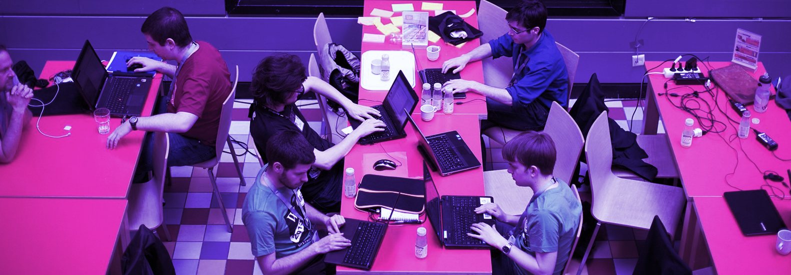

Machine Augmentation
Exploring machine-in-the-loop technologies to enable knowledge equity at scale
Overview
In 2018, the WMF Product team identified machine augmentation of human activities on the wikis as a key dependency for realizing the Movement's vision of making the sum of the world's knowledge accessible to all the world's people. This section covers work related to evaluating, debiasing, and developing the algorithms that will make knowledge equity knowledge equity achievable at scale. Algorithms have the potential to make content better and more available across language and cultural boundaries, to make contribution and moderation tasks more efficient, to flag article (un)trustworthiness to the reader, and to provide an overall picture of overall coverage of knowledge across and within wikis.
Studies
-
Trusted: Signals, Inferences & Indicators
The goal of this work is to develop systems for automatically detecting and characterizing the editorial debates behind Wikipedia articles for the purpose of surfacing indications of trustworthiness to the reader. This project is a collaboration between the WMF and the CMU Human Computer Interaction Institute. -
Content Translation Newcomer Survey
A customizable survey that can be used to more easily, quickly, and reliably collect feedback from a more diverse pool of Content Translation users. -
Article Section Translation Study
An evaluation of new designs for tools that help editors translate article sections and receive translation support on mobile devices. -
Machine Translation Meets Human Perception
The Machine Translation Meets Human Perception (MTMHP) study developed a protocol for evaluating how readers perceive and evaluate machine-translated content - across three different languages, cultural contexts, and content domains. -
Ethical & Human-Centered AI
This project identfies challenges and emerging opportunities to leverage AI technologies to further the mission of Wikimedia.
-
Augmentation
This is a position piece developed by WMF to frame the potential of machine-in-the-loop technologies in making all the world's knowledge available to all, and to ensure the process to assemble that knowledge is inclusive, balanced and safe.